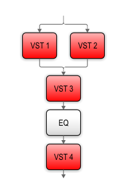
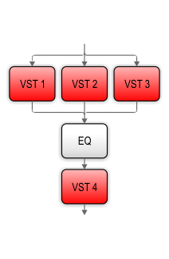
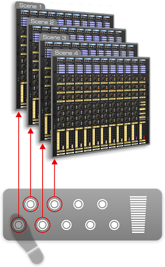

Con il player VST il software diventa hardware!
Esso consente di attivare strumenti ed effetti software VST, utilizzarli istantaneamente e con la stessa praticità degli apparecchi reali, e combinarli tra loro per ottenere una moltitudine di sonorità e configurazioni richiamabili con un click.
E' sufficiente installare i plug-in VST preferiti, collegare una o più master keyboard, un set di pad percussivi, chitarre, bassi e microfoni per disporre di potenti sintetizzatori del passato e del presente, organi, pianoforti acustici ed elettrici, batterie, campionatori, sequencers, loopers, simulatori di amplificatori per chitarra e basso, processori vocali e di dinamica, effetti di echo, riverbero, chorus, flanger, phaser, distorsion ed altro ancora.
Diversamente da altri apparecchi similari, il player VST di AudioStation è integrato all’interno di un mixer digitale equipaggiato per miscelare strumenti software VST, ma anche microfoni e strumenti reali, e applicare effetti VST.
Di fatto, per un migliore controllo di strumenti ed effetti VST, ogni canale del mixer è dotato di un proprio sistema di hosting, completo di patchbay MIDI.
In questo modo ogni musicista collegato alla console può utilizzare i propri strumenti ed effetti - sia software sia reali, in completa autonomia e richiamare le proprie configurazioni senza interferire con gli altri musicisti. Â
In ogni canale del mixer è possibile attivare fino a 4 plug-in di strumenti ed effetti — fino a 76 plug-in nell’intera console — collegabili tra loro in serie, in parallelo o un mix dei due.
Questa è una caratteristica estremamente utile. E' infatti importante sapere che, mentre gli effetti software sono costruiti per elaborare ed inviare in uscita i segnali audio ricevuti, gli strumenti software (come quasi tutti quelli reali) no. Solo alcuni di essi sono infatti in grado di ricevere ed elaborare i segnali di altri strumenti. Così il solo collegamento in serie dei plug-in, se è vero che non limita l’uso simultaneo di due o più effetti software posti in serie, non consente di utilizzare più di uno strumento software su uno stesso canale del mixer.
Per superare queste limitazioni in ogni canale sono disponibili quattro differenti routing VST:
E' ideale per utilizzare uno strumento software (nello slot VST 1) ed alcuni effetti (negli altri slot VST) o per elaborare con effetti software l’audio di un microfono o di uno strumento esterno (chitarra, basso, tastiere). Il posizionamento dello slot VST 4 dopo l’EQ ne fa la posizione ideale per attivare un eventuale processore di dinamica.


Il protocollo MIDI esteso amplia le comuni capacità di regolazione con funzionalità non disponibili in altri host VST, consentendo nuove e creative esperienze di controllo tattile, impossibili da ottenere con gli strumenti tradizionali.
Uno o più parametri, anche di plug-in differenti, possono essere facilmente assegnati a una stessa manopola, fader, pulsante o pedale (e viceversa) e controllati con messaggi MIDI di:
Utilizzare gli strumenti software con AudioStation è veramente semplice: è sufficiente collegare una o più master keyboard, pad percussivi, pedaliere e chitarre MIDI agli ingressi MIDI di AudioStation.
La patchbay MIDI integrata in ciascun canale del mixer permette di indirizzare ai plug-in i dati MIDI in ingresso e programmare differenti mappature di tastiera, punti di split, layer, trasposizioni, curve di dinamica e molto altro ancora.
L’immagine mostra un esempio di setup con due suoni differenti: sovrapposti sull’intera tastiera (layer) o assegnati a due distinte zone (split).
Maggiori informazioni sono riportate nella pagina MIDI Patchbay.
Per creare combinazioni di strumenti ed effetti maggiormente articolate (con più di 4 plug-in) è possibile utilizzare due o più canali del mixer assieme. Allo stesso modo è anche possibile collegare più master keyboard (o altri controller MIDI) a uno stesso canale del mixer.
Queste regolazioni posso essere effettuate In Global MIDI Routing, un’altra importante funzionalità della patch MIDI di AudioStation. In questa sezione è infatti possibile assegnare l’ingresso MIDI desiderato a più canali del mixer, o più ingressi MIDI a un medesimo canale.
Maggiori informazioni sono riportate nella pagina MIDI Patchbay.
Un generatore master di tempo, regolabile tra 5 e 240 BPM, garantisce il sync fra la consolle di missaggio, i plug-in e gli apparecchi MIDI esterni. E' possibile scegliere il tempo adeguato per ogni scena e mantenere così sincronizzati delay, phaser, step sequencer, arpeggiatori, drum e light machine, il player/recorder interno e perfino altri software collegati alla console.
Inoltre, una apposita funzione chiamata MIDI Slave consente ad AudioStation di sincronizzarsi al MIDI Clock e/o al MIDI Time Code ricevuto da altri apparecchi MIDI e/o software.
{kind=link}
{kind=link}